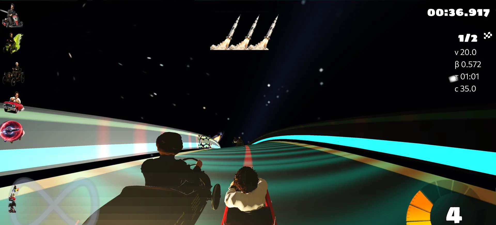
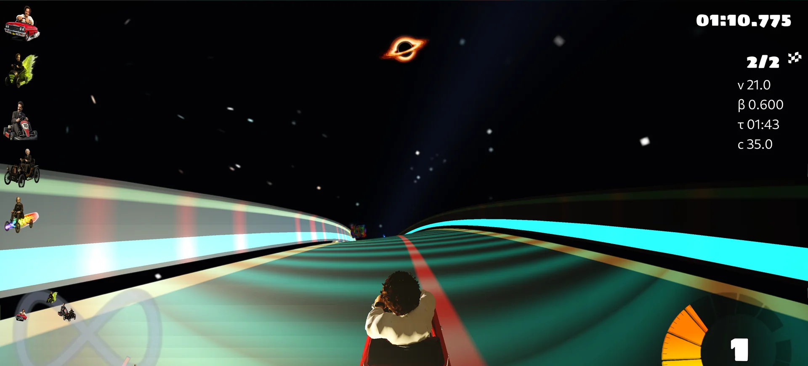

Optics
Aberration and apparent position
The renderer derives a Lorentz-based aberration transform and estimates retarded emission positions for moving geometry.
Free · open source · experimental
Relativistic kart racing
A 3D arcade racer where adjustable light speed, proper-time telemetry, aberration, Doppler colour effects, and spacetime-inspired power-ups reshape the track.

The game
Minkowski Kart is an open-source relativistic kart-racing game created by Robson Christie. It extends SuperTuxKart with special-relativistic visual transforms, time-related mechanics, live physics telemetry, and a new family of arcade power-ups.
Optics
The renderer derives a Lorentz-based aberration transform and estimates retarded emission positions for moving geometry.
Time
Each kart tracks proper time from its Lorentz factor, while a radius-limited Time Dilation item changes nearby opponents' effective light speed.
Colour
A directional spectral approximation brings vivid colour shifts to selected item and status effects.
Power-ups
Homing black-hole projectiles create screen-space lensing; paired wormholes teleport karts between linked endpoints.
Play
Race AI opponents, configure multiple local input devices, or bring several players together over a local network.
Controls
Keyboard and configurable gamepad or joystick input are implemented. Bind controls from the in-game Options menu.
Under the bonnet
Minkowski Kart uses special-relativistic equations for beta, gamma, proper-time bookkeeping, aberration, retarded apparent position, and a Doppler/searchlight colour model. Bullet-based kart physics and a relativistic velocity cap keep the handling immediate and fun.
Black holes, wormholes, and gravitational visual effects turn curved-spacetime ideas into readable hazards, shortcuts, and spectacular racing moments.

Version_1.9
Working public builds are available for Windows, macOS, Linux, and Android. Choose your platform, grab the latest package, and get onto the grid.
Best verified
The exact 1.09 GB release archive passes SHA-256, ZIP integrity, extraction, required-asset, and 44-second headless race-initialisation checks.
Working platforms
Both packages run. macOS also passes headless CI tests; the Android 5.0+ ARM64 package also passes structural and alignment checks.
Working platform
The x86-64 package runs. CI also compiles client and server configurations with GCC and Clang; redistributors should confirm stk-assets while archive completeness is audited. The iOS IPA remains a separate ad-hoc developer package.